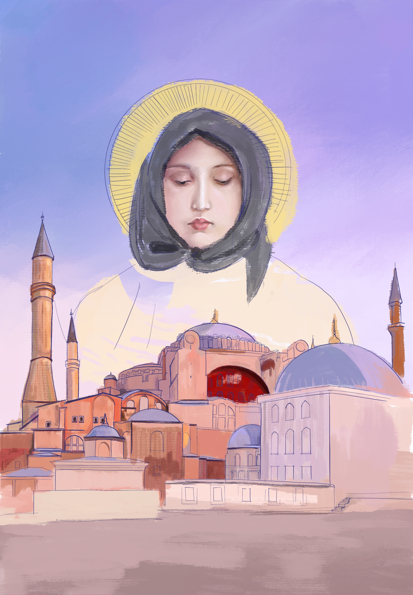
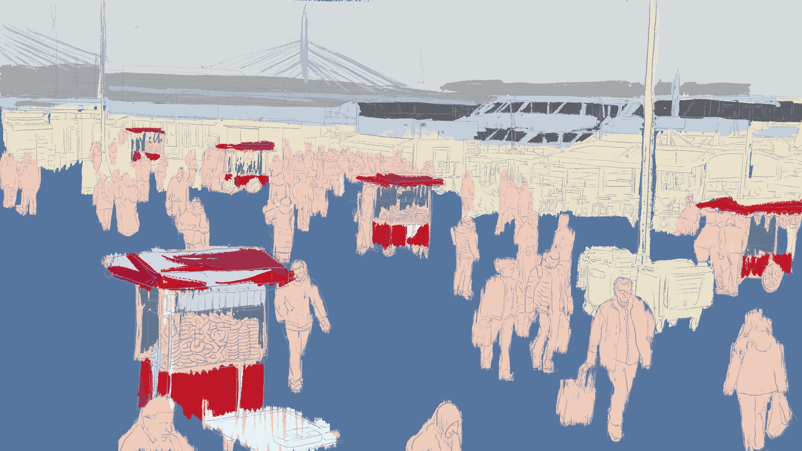

Untitled-Istanbul-1(unfinished)

Untitled-Istanbul-2(unfinished)

Crying
Untitled-Istanbul-1(unfinished)
Untitled-Istanbul-2(unfinished)
Crying
Untitled-Istanbul-1(unfinished) 10.2023 inspirations from the marvelous Hagia Sofia Mosuqe in Istanbul Tools: Procreate 1640*2360px
Untitled-Istanbul-2(unfinished) 10.2024 inspirations from the busy river bank at Galata Bridge in Istanbul Tools: Procreate 1640*2360px
Crying 09.2024 inspirations from the crying angel statue in Minsk Tools: Procreate 1640*2360px